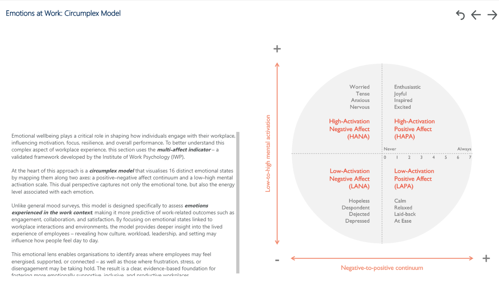

1,000+
Survey responses processed per client engagement
15
Behavioural personas defined with multi-condition logic
3
Analysis layers: demographic, persona & sentiment
45+
Survey questions mapped across seven thematic areas
The Problem
Organisations commission workplace surveys but typically receive a report of averages: overall
satisfaction scores sliced by department or location. The numbers tell what employees
scored, but not who is driving those scores or why. A 3.4/7 satisfaction
rating for "indoor environment quality" looks the same whether it comes from a full-time office
worker with sensory sensitivities or a hybrid manager who simply prefers quieter meeting rooms.
Consultants needed to move beyond headline scores and give clients specific, actionable
intelligence: which employee groups are most affected, what behaviours and needs characterise
those groups, and where workplace interventions would have the greatest impact.
💡 The platform powers the consultant workflow. Analysts run the models, then use the outputs to build structured recommendations directly for the client's leadership team.
Analytical Approach
The platform was designed around three complementary analysis tracks that work together
to give a complete picture of the workforce. Each track answers a different question.
📊
Demographic Segmentation
Slices satisfaction and importance scores by age group, tenure, caring responsibilities, contract type, line management status, and work location, answering "Which groups are underserved?"
🧩
Persona Classification
Assigns each respondent to one of 15 behavioural personas using multi-condition logic built on survey answers, answering "What kind of worker is each person, and what do they need?"
💬
Free-Text Sentiment Analysis
Processes open-ended comments with a Python NLP pipeline to extract themes, emotional tone, and recurring signals, answering "What are employees actually saying?"
End-to-End Analysis Pipeline
📋
Survey Platform
Raw responses
→
☁️
Microsoft Fabric
Lakehouse & shape
→
🧩
Power Query
Persona logic
→
🐍
Python NLP
Comment analysis
→
📈
Power BI
Client dashboard
→
🏢
Consultant Report
Recommendations
Track 1: Demographic Segmentation
The first layer of analysis compares satisfaction and importance scores across every major
demographic cut available in the survey. This identifies statistically meaningful differences
between groups. For example, whether employees with caring responsibilities rate flexibility
support significantly lower than those without, or whether Gen Z employees place notably higher
importance on social collaboration than older cohorts.
Key demographic dimensions analysed across all seven workplace themes (space, technology,
wellbeing, collaboration, flexibility, environment, and culture):
- Age group: Gen Z, Millennial, Gen X, Boomer
- Tenure: under 1 year through to 10+ years
- Caring responsibilities: with and without dependants
- Neurodiversity / disability: self-reported
- Line management status: manager vs. individual contributor
- Work location split: % time in office vs. home vs. other sites
- Contract type: permanent full-time, part-time, contract
Age Group Distribution
Illustrative distribution based on typical client workforce profile
Work Location Split
Illustrative distribution based on typical client workforce profile
Tenure Breakdown
Illustrative distribution based on typical client workforce profile
Caring Responsibilities
Has caring responsibilities (38%)
No caring responsibilities (62%)
Illustrative distribution based on typical client workforce profile
Track 2: Behavioural Persona Classification
The most technically complex part of the platform. Rather than grouping employees by
demographics alone, the persona model uses a set of conditional rules, each derived
from specific survey question responses, to classify each respondent into one of 15
behavioural archetypes. The result is an employee population map that consultants can
use to understand not just satisfaction scores, but the underlying patterns of how people
work and what they need from their environment.
Personas were developed across three tiers of strategic relevance:
Persona Distribution Across Workforce (Primary Personas)
Illustrative percentage breakdown showing how a typical client workforce maps across the five primary personas
Primary Personas: Core for most organisations
Primary
🏠 Remote Specialist
Primarily works from home with minimal need for in-person collaboration. Values a quiet, well-equipped home workspace and reliable digital tools.
Logic: WFH >= 80% + dedicated home office + individual work importance >= 5 + office visits <= 1 day/week
Primary
🤝 Collaborative Team Leader
Spends most of the week in the office, leads a team, and relies on face-to-face collaboration and meetings to manage work effectively.
Logic: Line manager = Yes + office >= 3 days/week + team collaboration or meetings importance >= 5
Primary
👨👧 Hybrid Parent
Balances office and home working with caring responsibilities. Needs flexibility, supportive policies, and predictable environments to stay productive.
Logic: Caring responsibilities = Yes + office time 40-60% + comments flagging balance or flexibility
Primary
🎧 Sensory-Conscious Contributor
Experiences sensory sensitivity (noise, lighting, temperature) and values calm, adjustable environments that support focus and wellbeing.
Logic: Neurodivergent = Yes + sensory importance >= 5 + sensory satisfaction <= 3
Primary
✈️ On-the-Move Consultant
Regularly travels between offices or client sites. Relies on mobile working setups, ad hoc meeting areas, and robust tech access on the go.
Logic: Other office / on-the-move >= 30% + no fixed desk + commute time >= 30 min
Secondary Personas: Strategic differentiators
Secondary
🌿 Wellbeing Seeker
Prioritises mental and physical health. May be at risk of stress or burnout and values access to wellbeing resources and psychological safety.
Logic: Workload stress <= 2 + wellbeing support importance >= 5 + wellbeing satisfaction <= 3
Secondary
🖥️ Desk-Driven Regular
Prefers a consistent, office-based routine with a fixed desk and clear structure. Finds comfort in routine and personal ownership of space.
Logic: Office >= 90% + dedicated desk + workspace satisfaction >= 5
Secondary
🌱 Emerging Professional
Early in their career and focused on learning, growth, and connecting with others. Values access to mentoring, visibility, and team engagement.
Logic: Tenure <= 3 years + social/collaboration importance >= 5 + optional: Gen Z / Millennial age band
Secondary
⚡ Digital Optimiser
Highly confident with technology, often works hybrid, and relies on digital tools to collaborate efficiently across locations and teams.
Logic: Digital tools importance >= 5 + IT satisfaction >= 5 + works across >= 2 locations
Secondary
🚪 Quiet Leaver
Low sense of connection or satisfaction. At risk of silent disengagement and unlikely to express concerns openly through standard channels.
Logic: Overall satisfaction avg <= 3 + belonging score <= 3 + optional: work activities satisfaction <= 3
Extended Personas: Optional tier for deeper analysis
Extended
🧠 Neurodivergent Leader
A manager who identifies as neurodivergent, balancing leadership with a need for environments that support focus, clarity, and psychological safety.
Logic: Neurodivergent = Yes + line manager = Yes + sensory importance >= 5
Extended
🕊️ Flex-Seeker
Often in a contract or part-time role. Values autonomy, mobility, and the ability to shape when and where they work over fixed routines.
Logic: Contract / part-time + flexibility importance >= 5 + office time < 60%
Extended
🔥 Burnout Risk
Struggles with workload, stress, or limited support. Highly capable but close to disengagement without targeted intervention.
Logic: Workload stress score >= 6 + wellbeing support satisfaction <= 3 + optional: comment sentiment flags exhaustion
Extended
🎉 Culture Connector
Highly engaged and socially active. Seeks collaboration, inclusion, and culture-building through events, mentoring, or informal networks.
Logic: Office >= 3 days + social importance >= 5 + comments referencing team, inclusion, or engagement
Extended
🚜 Field-Based Nomad
Rarely desk-based, often in the field or on the move. Needs seamless mobile access to tools, data, and occasional touchdown space.
Logic: Non-primary work location >= 50% + hot desk or no desk + optional: digital resources satisfaction <= 3
How Persona Logic Was Implemented
Each persona was implemented as a conditional classification rule in Power Query (M language),
operating on a per-respondent basis. The survey data was structured in a long format with one
row per question response, so the first step was grouping all answers by unique_response_id
to reconstruct each individual's full response profile. Helper functions extracted specific
numeric ratings and checked for the presence of categorical answers, enabling clean IF/AND logic
across multiple conditions.
// Respondents are grouped so all answers are accessible per person
GroupedByRespondent = Table.Group(Source, {"unique_response_id"}, {
{"AllResponses", each _, type table}
}),
// Persona conditions are then evaluated per respondent
AddFinalPersona = Table.AddColumn(ExpandedConditions, "Final_Persona", each
if [IsRemoteSpecialist] = true then "Remote Specialist"
else if [IsCollaborativeLeader] = true then "Collaborative Team Leader"
else if [IsHybridParent] = true then "Hybrid Parent"
else if [IsSensoryContributor] = true then "Sensory-Conscious Contributor"
else "Unclassified"
)
Priority ordering was applied so that each respondent receives exactly one persona assignment,
with primary personas taking precedence. The final persona column was then joined back to the
original response table, making it available as a slicer dimension in Power BI.
Track 3: Free-Text Comment Analysis
Open-ended survey questions generate the richest qualitative signal, but at 1,000+ responses
per engagement they cannot be read manually in a consulting workflow. A Python NLP pipeline
was built to process all free-text comments and surface structured outputs for the dashboard.
The pipeline performed three operations on each comment: theme extraction (mapping to one
of the seven workplace themes: space, technology, wellbeing, collaboration, flexibility,
environment, culture), sentiment scoring (positive / neutral / negative), and emotional tone
classification using an adapted version of the circumplex model of affect.

Emotions at Work: Circumplex Model. Employee emotional states are plotted across two axes: valence (negative to positive affect) and activation (low to high energy). This validated framework helps surface not just whether employees are satisfied, but how they feel, enabling more targeted interventions for groups showing high-activation negative affect (e.g. stress, hostility) vs. low-activation negative affect (e.g. disengagement, boredom).
Comment Sentiment Distribution
Illustrative distribution across all open-text responses
Comment Themes by Volume
Illustrative theme distribution across all open-text responses
The circumplex output was particularly valuable for identifying the Quiet Leaver
and Burnout Risk personas, both groups whose numeric satisfaction scores
alone may not flag them as at-risk. Low-activation negative affect comments (expressing
fatigue, disconnection, or quiet resignation) were disproportionately associated with
respondents classified into these two personas.
Technical Implementation
☁️
Microsoft Fabric: Data Extraction & Shaping
Survey responses were ingested and stored in a Microsoft Fabric Lakehouse. The Lakehouse
joined response tables to question metadata, client identifiers, and site information,
preserving the long-format response structure (one row per answer) for Power Query
processing downstream.
⚙️
Power Query (M): Persona Engine
The full 15-persona classification system was built in Power Query M language. Helper
functions handled numeric extraction, Yes/No detection, and range checking. Respondents
were grouped, conditions evaluated per individual, and a priority-ordered persona
label joined back to the dataset.
🐍
Python: NLP Comment Pipeline
Free-text comments were processed with a Python NLP pipeline covering tokenisation,
stop-word removal, and theme classification. Sentiment analysis was applied at
comment level, and emotional tone was mapped to circumplex quadrants to identify
activation and valence patterns across persona groups.
📊
Power BI: Client Dashboard
The final enriched dataset (with demographic flags, persona labels, sentiment scores,
and circumplex classifications) was loaded into Power BI. Consultants used the dashboard
to explore satisfaction and importance gaps by persona, build client presentations,
and identify the highest-priority areas for workplace intervention.
Microsoft Fabric
Power Query (M)
Power BI
Python
NLP / Sentiment Analysis
Circumplex Affect Model
Persona Modelling
Likert Scale Analysis
Impact & Outcomes
The platform fundamentally changed how consultants engaged with survey results. Instead of
presenting clients with a static report of average scores, they could have a structured
conversation grounded in the specific employee groups driving each issue, and arrive at
the meeting with targeted recommendations rather than generic observations.
🎯
Targeted recommendations
Persona-mapped outputs let consultants assign workplace interventions (space redesign, policy change, wellbeing support) to specific employee groups rather than the whole organisation.
🔍
Hidden signals surfaced
The Quiet Leaver and Burnout Risk personas, identified through NLP comment tone rather than numeric scores alone, revealed at-risk groups that would have been invisible in a standard satisfaction report.
⚡
Scalable consulting workflow
Automating comment analysis and persona classification across 1,000+ responses removed manual bottlenecks, enabling the same analytical depth regardless of engagement size.
🏢
Client-ready intelligence
Outputs were structured specifically for consultant use. Power BI dashboards were built to support client-facing presentations, not just internal analysis.
🔗 This project shares a common NLP and comment-analysis methodology with the NPS Intelligence Platform. Both use free-text processing to surface signals that structured survey data misses.